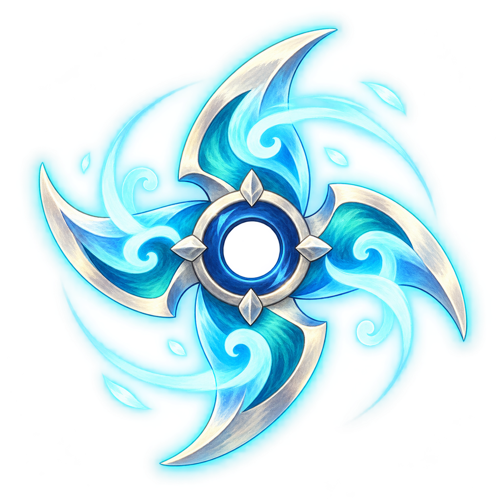

Tempest · Wind stars
Ten hearts. Five wind stars. Tempest recharges once, from five hearts to seven, then sends paired gusts and summons cloud monsters. Jump over gusts or hold Down to duck beneath them.
X / F throws a star. Z stows or equips the stars, letting you punch monsters. Misses settle on nearby clouds: touch them to collect them again. Stars that hit Tempest stay embedded. All five successful hits defeat him.
Loading artwork…